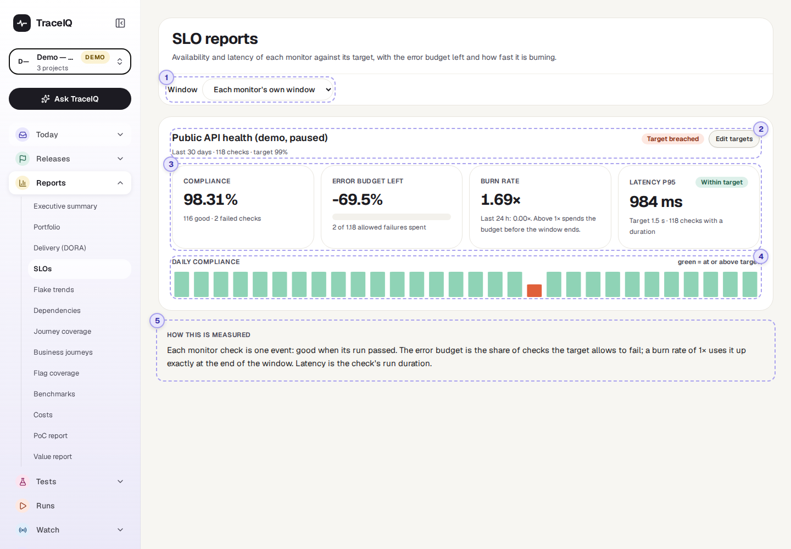
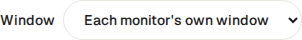
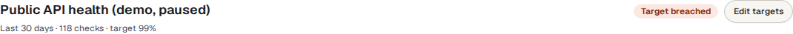
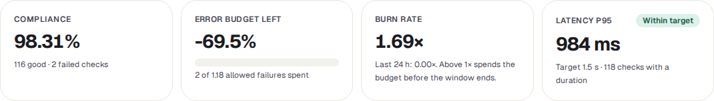
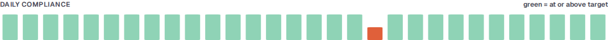
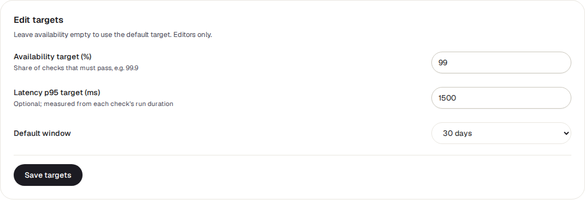

SLOs
For every monitor in the project: how often its checks passed, compared with the target you set, how much room for failures is left before the target is missed, and how quickly that room is being used up. Also how fast the checks were.
What it is for
An SLO (service level objective) is a promise about how reliable a service should be, for example "99.9% of checks pass over 30 days". This page answers "Are we keeping that promise, and will we still be keeping it at the end of the month?"
The numbers come from monitors: schedules that check a live site or API on a timer (a schedule with monitor mode turned on; see Watch → Monitors). Each time a monitor runs is one check. A check is good when its test run passed.
Service owners
See whether the service meets its target, and how many more failures it can take this month.
On-call and operations
Spot a fast burn: a recent run of failures that will break the target soon if it continues.
Managers
Report reliability against an agreed number instead of "it felt stable".
Where to find it: in the sidebar, open Reports → SLOs. The page's own heading says SLO reports.
A tour of the screen
The page shows the monitors of the project selected at the top of the sidebar, one card each, in name order. The numbers on the screenshot match the sections below.

Window

How many days of checks to count, ending now. Each monitor's own window uses the default saved for each monitor (30 days unless someone changed it). Choosing Last 7, 30 or 90 days applies that window to every monitor on the page, without changing what is saved.
Name, target and status

The monitor's name, then the window, the number of checks in it and the availability target. "(default target)" means no target has been set, so TraceIQ uses 99.9%.
| Status | What it means |
|---|---|
| Meeting target | The share of good checks is at or above the target, and the last 24 hours look fine. |
| At risk (fast burn) | Still above the target over the window, but in the last 24 hours checks failed faster than the target allows. If that continues, the target will be missed. |
| Target breached | The share of good checks in the window is below the target. |
| No data | No checks in the window. The card then says so instead of showing the tiles. |
Edit targets opens the targets form; see below.
The four tiles

| Tile | What it means |
|---|---|
| Compliance | The share of checks in the window that were good. Underneath: how many were good and how many failed. |
| Error budget left | The error budget is how many failed checks the target allows. With a 99% target and 118 checks, 1% of 118 = 1.18 checks may fail. The tile shows how much of that is left: 100% = no failures yet, 0% = used up exactly. Below zero means overspent: in the example, 2 failures against 1.18 allowed is −69.5%. The bar is green, turns yellow under 25% and red at 0% or below. |
| Burn rate | How fast the budget is being used. 1× uses it up exactly at the end of the window; 2× twice as fast; under 1× leaves some over. The big number is for the whole window; the line underneath is for the last 24 hours, the early warning. |
| Latency p95 | How long checks took: 95% of checks were this quick or quicker, so a few slow ones don't hide behind the average. It is the duration of the check's whole test run. With a latency target set, a label says Within target or Over target. |
With a target of 100%, no failure is allowed at all. The error budget shows 100% while every check passes, and "—" as soon as one fails.
Daily compliance

One bar per day of the window, oldest on the left. The height is that day's share of good checks.
| Bar colour | Meaning |
|---|---|
| Green | That day met the target. |
| Orange | That day was below the target. |
| Grey line | No checks that day, for example while the monitor was paused. |
Because the bars start at zero, a 98% day and a 100% day look almost the same height: go by the colour. Days are calendar days in UTC.
If a monitor checks from more than one region (place in the world), a By region table follows, with the same figures per region.
How this is measured
A short reminder, at the bottom of the page, of the rules above: each check is one event, good when its run passed; the error budget is the share of checks the target allows to fail; latency is the check's run duration.
Editing the targets

- Availability target (%): the share of checks that must pass, e.g. 99.9. Leave it empty to use the default of 99.9%.
- Latency p95 target (ms): optional, in milliseconds (1500 = 1.5 seconds).
- Default window: 7, 30 or 90 days; used when the page's window menu is on "Each monitor's own window".
Save targets needs the editor role on the project; others get an error message. Every change is recorded in the audit log with the old and new values. Close targets closes the form without saving.
Watch it in use
How to…
…set a target for a monitor
- Select the monitor's project at the top of the sidebar.
- On the monitor's card, press Edit targets.
- Enter the availability target, and a latency target if you have one. Choose the window your target is measured over.
- Press Save targets. The card updates straight away.
…tell whether there is still room for failures this month
- Choose Last 30 days in the window menu.
- Read Error budget left. Above zero, the target still holds; how far above says how many more failures it can take.
- Read the Burn rate line for the last 24 hours. Above 1×, the budget is shrinking faster than planned.
…find the bad days
- Look for orange bars in Daily compliance.
- Open Watch → Monitors for that monitor to see its recent checks.
Good to know
- Only monitors. Ordinary schedules and runs you start yourself don't count. A project with no monitors shows "No monitors".
- Paused monitors are listed too, with the checks they made before they were paused. Once the window has moved past those, the card says there are no checks.
- The window is rolling. "Last 30 days" counts back from this moment, not from the start of the month, so the numbers move a little every day as old checks drop out.
- Latency includes the whole test. It is the run's duration, not just the time the site took to answer, so a long test makes it larger.
- It doesn't update by itself. The page fetches the numbers when you open it, change the window or project, or come back to its browser tab.
Related pages
Flake trends
The next page in this guide: whether tests that pass and fail at random are becoming more or less common, and where.
Monitors
The monitors these numbers come from: their state, recent checks and alerts.
On-call
Who gets paged when a monitor goes down.
Delivery (DORA)
How often you deploy and how often a deployment goes wrong.